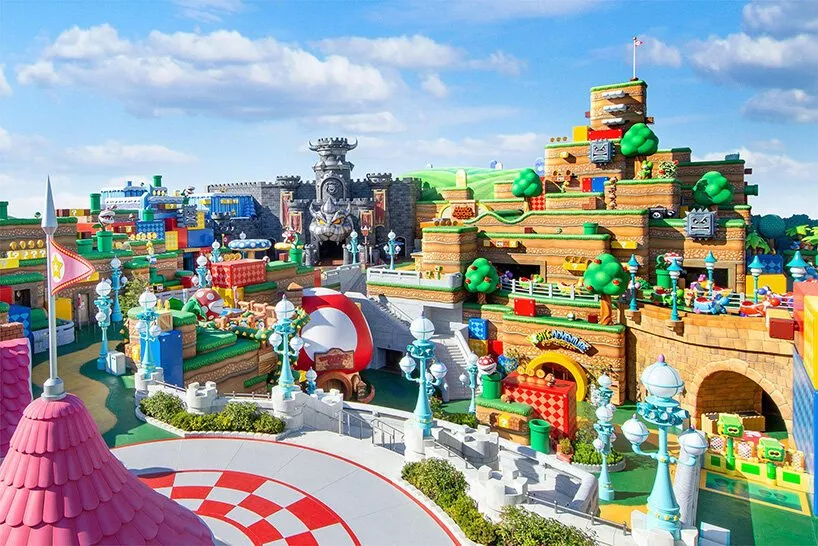

Sobre nós
Bem-vindo ao nosso portal de notícias dedicado ao universo Nintendo! Nossa missão é reunir as principais informações, novidades e curiosidades sobre uma das empresas mais influentes da história dos videogames. Aqui, os fãs encontram conteúdos atualizados sobre lançamentos, eventos, consoles, jogos e tudo o que movimenta a comunidade Nintendo ao redor do mundo.
Nossa equipe é formada por apaixonados por games que acompanham diariamente o mercado para trazer notícias confiáveis, análises detalhadas e coberturas especiais. Buscamos transformar cada informação em um conteúdo acessível, permitindo que jogadores de todos os níveis se mantenham informados sobre as novidades de suas franquias favoritas.
Além das notícias, também valorizamos a interação com a comunidade. Acreditamos que os jogadores são parte fundamental do universo Nintendo, por isso criamos um espaço onde opiniões, teorias e experiências podem ser compartilhadas. Nosso objetivo é fortalecer a conexão entre os fãs e incentivar discussões saudáveis sobre os jogos e personagens que marcaram gerações.
Este site foi criado para ser uma referência para quem deseja acompanhar tudo o que acontece no mundo Nintendo. Seja para conhecer os próximos lançamentos, relembrar clássicos inesquecíveis ou descobrir curiosidades sobre a empresa, estamos comprometidos em oferecer conteúdo de qualidade e uma experiência agradável para todos os visitantes.
